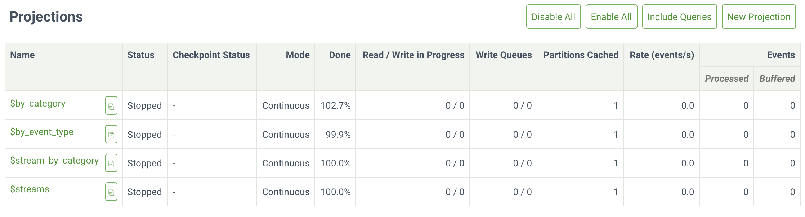
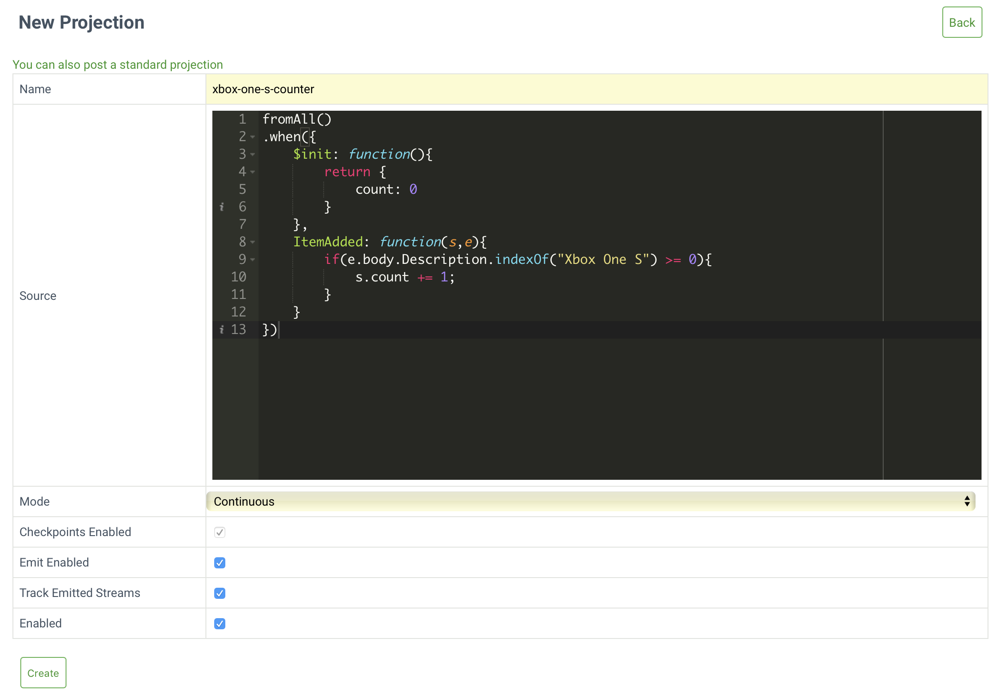

Step 3 - Projections
This getting started guide shows you how to get started with Event Store using the Atom publishing protocol as the primary interface.
Note
The described is for development and evaluation of Event Store. It does not describe a production setup. The HTTP examples use cURL, but you can read Atom feeds with a wide variety of applications and languages.
Projections is an Event Store subsystem that lets you write new events or link existing events to streams in a reactive manner.
Projections are good at solving one specific query type, a category known as 'temporal correlation queries'. This query type is common in business systems and few can execute these queries well.
Note
Projections require the event body to be in JSON.
When running a projection, you can choose whether the query should run and give you all results present or whether the query should continue running into the future finding new results as they happen and updating its result set.
Setting up projections
You enable projections with the command line argument --run-projections. For example, the command below enables all projection modes (system and user-defined):
Tip
Read this guide for all the possible parameter values.
EventStore.ClusterNode.exe --run-projections=all --start-standard-projections=true
To disable them again, run:
EventStore.ClusterNode.exe --run-projections=none
You then see new tabs enabled in the Admin UI with the four system projections in a Stopped state:

You can also query the state of all projections using the HTTP API.
curl -i http://localhost:2113/projections/any -H "accept:application/json" | grep -E 'effectiveName|status'
Add sample data
Download the following files that contain sample data used throughout this step of the getting started guide.
- shoppingCart-b989fe21-9469-4017-8d71-9820b8dd1164.json
- shoppingCart-b989fe21-9469-4017-8d71-9820b8dd1165.json
- shoppingCart-b989fe21-9469-4017-8d71-9820b8dd1166.json
- shoppingCart-b989fe21-9469-4017-8d71-9820b8dd1167.json
Add the sample data to four different streams:
curl -i -d "@shoppingCart-b989fe21-9469-4017-8d71-9820b8dd1164.json" "http://127.0.0.1:2113/streams/shoppingCart-b989fe21-9469-4017-8d71-9820b8dd1164" -H "Content-Type:application/vnd.eventstore.events+json"
curl -i -d "@shoppingCart-b989fe21-9469-4017-8d71-9820b8dd1165.json" "http://127.0.0.1:2113/streams/shoppingCart-b989fe21-9469-4017-8d71-9820b8dd1165" -H "Content-Type:application/vnd.eventstore.events+json"
curl -i -d "@shoppingCart-b989fe21-9469-4017-8d71-9820b8dd1166.json" "http://127.0.0.1:2113/streams/shoppingCart-b989fe21-9469-4017-8d71-9820b8dd1166" -H "Content-Type:application/vnd.eventstore.events+json"
curl -i -d "@shoppingCart-b989fe21-9469-4017-8d71-9820b8dd1167.json" "http://127.0.0.1:2113/streams/shoppingCart-b989fe21-9469-4017-8d71-9820b8dd1167" -H "Content-Type:application/vnd.eventstore.events+json"
Note
While it's not the fastest method, you can also use the Admin UI for creating the streams, and all the tasks in this step, as we saw in step 1.
Writing your first projection
Tip
Read this guide to find out more about the user defined projection's API.
The projection counts the number of 'XBox One S's that customers added to their shopping carts.
A projection starts with a selector, in this case fromAll(). Another possibility is fromCategory({category}) which this step discusses later, but for now, fromAll should do.
The second part of a projection is a set of filters. There is a special filter called $init that sets up an initial state. You want to start a counter from 0 and each time Event Store observes an ItemAdded event for an 'Xbox One S,' increment the counter.
Here is the projection, you can download it as a file here:
fromAll()
.when({
$init: function(){
return {
count: 0
}
},
ItemAdded: function(s,e){
if(e.body.Description.indexOf("Xbox One S") >= 0){
s.count += 1;
}
}
})
You create a projection by calling the projection API and providing it with the definition of the projection. Here you decide how to run the projection, declaring that you want the projection to start from the beginning and keep running. You can create a projection using the Admin UI by opening the Projections tab, clicking the New Projection button and filling in the details of your projection.

To use the HTTP or .NET API, pass the projection JSON file as a parameter of your request, along with any other settings:
curl -i --data-binary "@xbox-one-s-counter.json" http://localhost:2113/projections/continuous?name=xbox-one-s-counter%26type=js%26enabled=true%26emit=true%26trackemittedstreams=true -u admin:changeit
Next Steps
Read here for more information on creating projections with the HTTP API and the parameters available, or our projections section for details on projection syntax.
Querying for the state of the projection
Now the projection is running, you can query the state of the projection. As this projection has a single state, query it with the following request:
Writing to streams from projections
The above gives you the correct result but requires you to poll for the state of a projection. What if you wanted Event Store to notify you about state updates via subscriptions?
Output state
Update the projection to output the state to a stream by calling the outputState() method on the projection which by default produces a $projections-{projection-name}-result stream.
Below is the updated projection, you can download it as a file here:
fromAll()
.when({
$init: function(){
return {
count: 0
}
},
ItemAdded: function(s,e){
if(e.body.Description.indexOf("Xbox One S") >= 0){
s.count += 1;
}
}
}).outputState()
To update the projection, edit the projection definition in the Admin UI, or issue the following request:
curl -i -X PUT --data-binary @"xbox-one-s-counter-outputState.json" http://localhost:2113/projection/xbox-one-s-counter/query?emit=yes -u admin:changeit
Then reset the projection you created above:
curl -i -X POST "http://localhost:2113/projection/xbox-one-s-counter/command/reset" -H "accept:application/json" -H "Content-Length:0" -u admin:changeit
You can now read the events in the result stream by issuing a read request.
curl -i "http://localhost:2113/streams/\$projections-xbox-one-s-counter-result?embed=body" -H "accept:application/json" -u admin:changeit | grep data
Configure projection properties
You can configure properties of the projection by updating values of the options object. For example, the following projection changes the name of the results stream, you can download it as a file here:
options({
resultStreamName: "xboxes"
})
fromAll()
.when({
$init: function(){
return {
count: 0
}
},
ItemAdded: function(s,e){
if(e.body.Description.indexOf("Xbox One S") >= 0){
s.count += 1;
}
}
}).outputState()
Then send the update to the projection:
curl -i -X PUT -d "@update-projection-options.json" http://localhost:2113/projection/xbox-one-s-counter/query?emit=yes -u admin:changeit
Tip
You can find all the options available in the user defined projections guide.
Now you can read the result as above, but use the new stream name:
curl -i "http://localhost:2113/streams/xboxes?embed=body" -H "accept:application/json" -u admin:changeit | grep data
The number of items per shopping cart
The example in this step so far relied on a global state for the projection, but what if you wanted a count of the number of items in the shopping cart per shopping cart.
Event Store has a built-in $by_category projection that lets you select events from a particular list of streams. Enable this projection with the following command.
curl -i -d{} http://localhost:2113/projection/%24by_category/command/enable -u admin:changeit
The projection links events from existing streams to new streams by splitting the stream name by a separator. You can configure the projection to specify the position of where to split the stream id and provide a separator.
By default, the category splits the stream id by a dash. The category is the first string.
| Stream Name | Category |
|---|---|
| shoppingCart-54 | shoppingCart |
| shoppingCart-v1-54 | shoppingCart |
| shoppingCart | No category as there is no separator |
You want to define a projection that produces a count per stream for a category, but the state needs to be per stream. To do so, use $by_category and its fromCategory API method.
Below is the projection, you can download the file here:
fromCategory('shoppingCart')
.foreachStream()
.when({
$init: function(){
return {
count: 0
}
},
ItemAdded: function(s,e){
s.count += 1;
}
})
Create the projection with the following request:
curl -i --data-binary "@shopping-cart-counter.json" http://localhost:2113/projections/continuous?name=shopping-cart-item-counter%26type=js%26enabled=true%26emit=true%26trackemittedstreams=true -u admin:changeit
Querying for the state of the projection by partition
Querying for the state of the projection is different due to the partitioning of the projection. You have to specify the partition and the name of the stream.
curl -i http://localhost:2113/projection/shopping-cart-item-counter/state?partition=shoppingCart-b989fe21-9469-4017-8d71-9820b8dd1164
Next step
In this third part of our getting started guide you learned about projections. The next, and final part covers which API or SDK to use, and when.